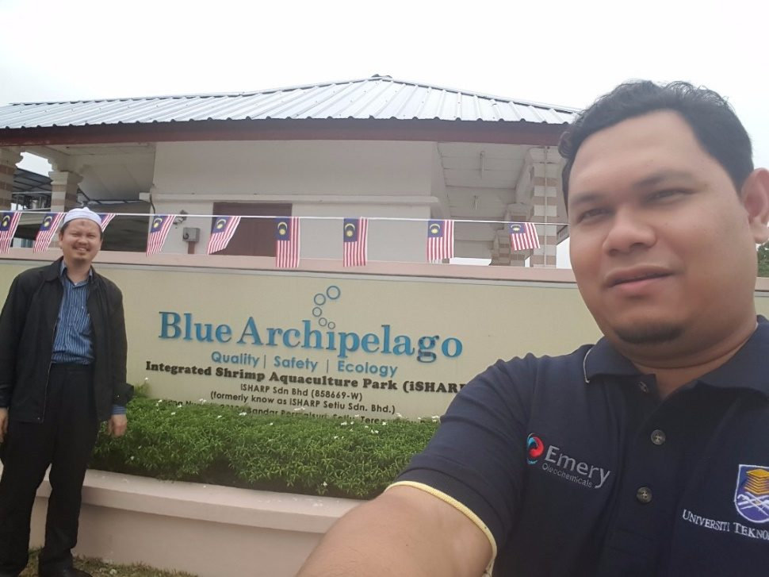
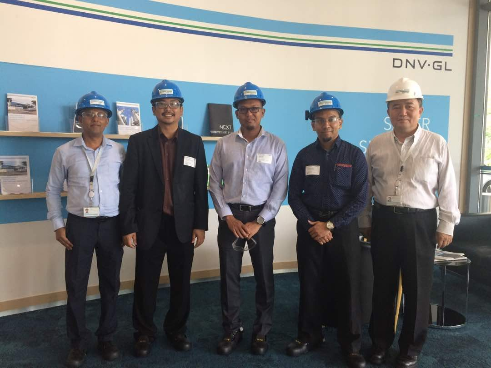
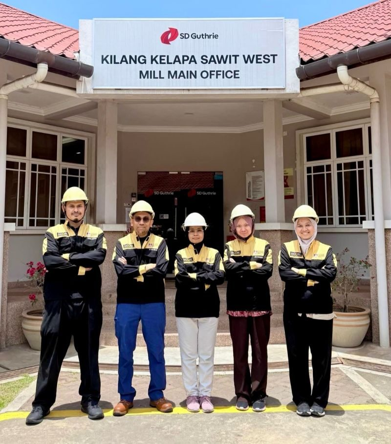
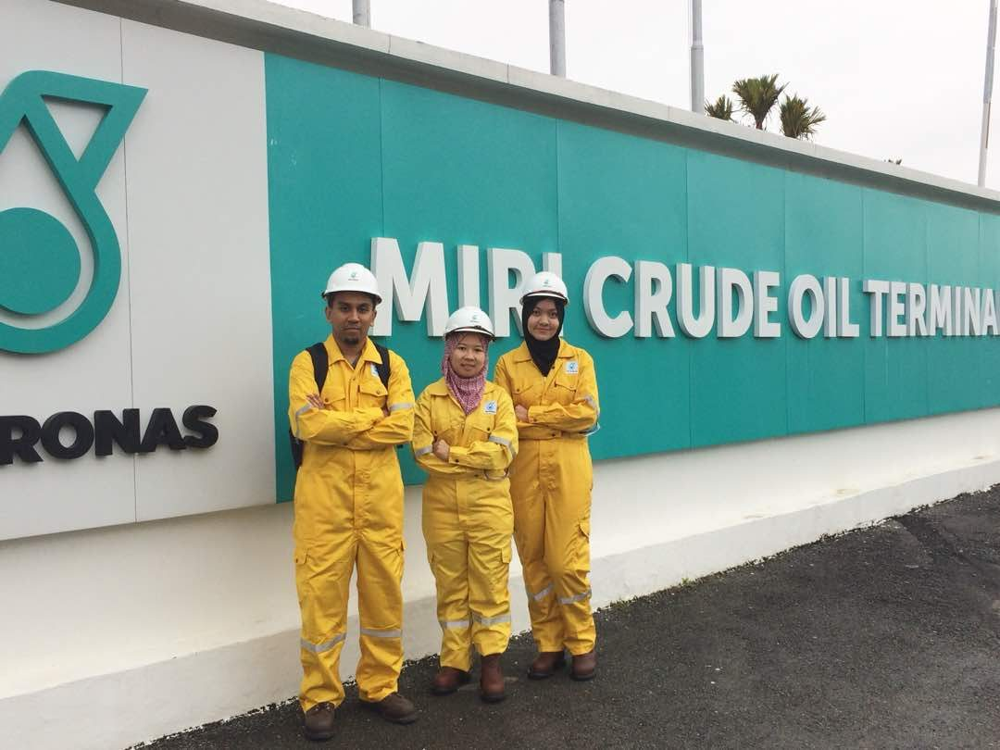
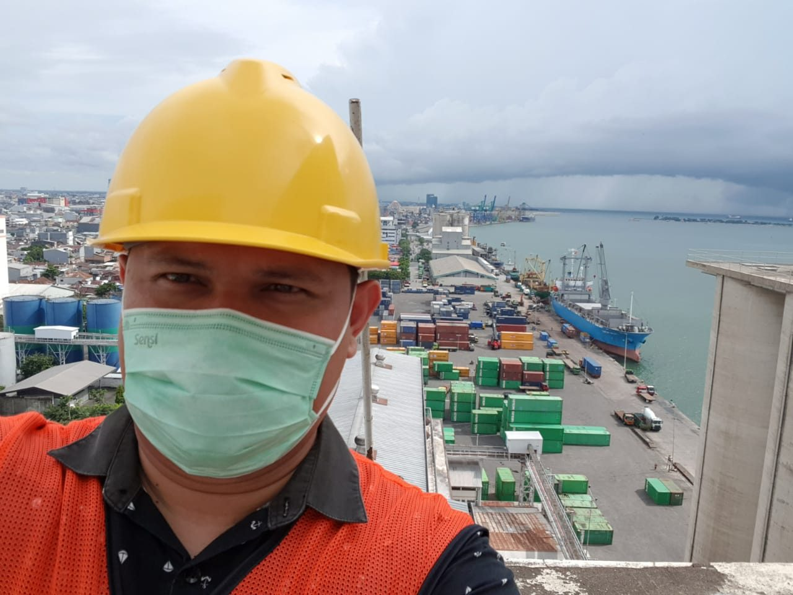
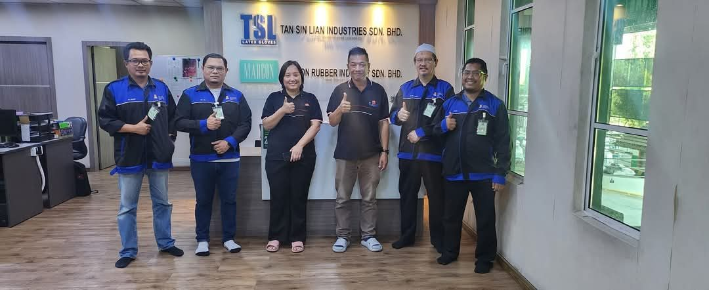
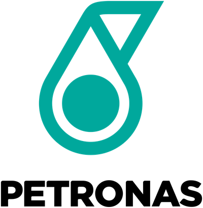
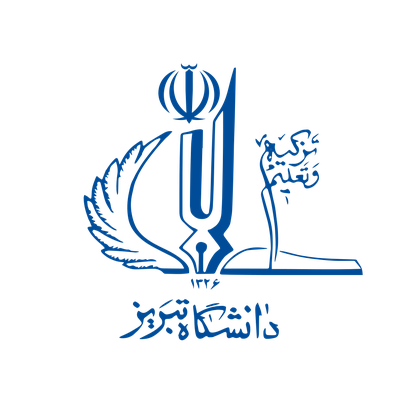

Plants thatstay up. Wastethat earns its keep.
INPRES is a research group of seven chemical engineers at UiTM Shah Alam. We write CIMAH safety reports for terminals and factories across Malaysia, work out why pipelines corrode, and turn palm waste, sludge and coconut shell into things worth selling.
Bring us a plant problem →Do a PhD with us
- AwardBest Research Group, DNA Penyelidikan @ KPK 2024
- RatingFive-star rated, 2019 to 2024
- Register7 Professional Engineers, Board of Engineers Malaysia
Project log
S-001
The record
These are the combined UiTM Expert records of our seven core members. A grant, project or paper shared by two of us appears once.
| Item | Value | Detail · source |
|---|---|---|
| Research grants | RM 11.3M | 154 grants won UiTM Expert, grants |
| Industry work | RM 10.9M | 138 projects, 88 completed UiTM Expert, consultancy |
| Research outputs | 893 | 387 indexed in Scopus or Web of Science UiTM Expert, publications |
| Postgraduates | 82 | 32 MSc and PhD students working now UiTM Expert, supervision |
| Industry clients | 72 | PETRONAS, Top Glove, TNB Research, Clariant and more Client names, merged |
| Copyrights and IP | 11 | plus gold and silver at iidex 2024 Group records |
Indexed papers a year, 2010 to 2026
Best year 2022, with 56 indexed papers. Close to 40 a year since. Hatched bar: 2026 to 8 October.
U-000
Pick a unit. We have probably worked on it.
A process plant is a row of places where things can leak, burn, clog or corrode. Tap any part of this one to see who in INPRES handles it and what they have done.
Hover or tap a unit. Dashed line: process flow. The magnifier on the buried pipe shows pitting corrosion.
RReliability
Keep it running, keep it safe
Process safety, risk and corrosion engineering for plants that store or move hazardous material.
- CIMAH safety reports and quantitative risk assessment
- Facility siting, inherent safety, hazardous area classification
- Pipeline and top-of-line corrosion


SSustainability
Waste less, emit less
Environmental and process systems engineering. Most of it starts with a waste stream someone is paying to get rid of.
- Biochar, activated carbon and fuels from biomass and sludge
- Adsorbents for H2S, SO2, CO2 and VOCs
- Process design and optimisation


C-100All case stories
How three jobs went

Case 01 · CIMAH · 2016 to 2026
Five terminals in one year
In 2025 PETRONAS asked INPRES for CIMAH studies at five of its fuel and LPG terminals. It was the biggest single run of CIMAH work in the group’s history.
Read the case
Case 02 · Corrosion · 2017 to 2026
Reading the top of the pipe
Wet gas pipelines corrode where you least expect it: on the roof of the pipe, where water condenses. Industry now sends Dr Najmiddin its coupons.
Read the case
Case 03 · Waste to wealth · 2016 to 2024
It started in an oil drum
Prof. Juferi Idris started by charring landscape waste in a steel oil drum. A decade later, the question is whether biochar compost can be sold by the tonne.
Read the caseM-200Site map
Where the work happens
67 of 136 industry projects have a site we can place on the map. Most sit along the west coast, where Malaysia keeps its terminals, refineries and glove factories.
- Selangor34
- Kedah9
- Kuala Lumpur7
- Terengganu5
- Johor3
- Sarawak3
T-007
The engineers
Every core member is registered with the Board of Engineers Malaysia. Between them they cover the feedstock yard, the reactor, the tank farm and the pipe in the ground.
01
Assoc. Prof. Ir. Dr. Azil Bahari AliasDean of FKK · Head of INPRES02
Prof. Ir. Dr. Zulkifli Abd RashidProcess safety & loss prevention03
Assoc. Prof. Ir. Dr. Najmiddin YaakobCorrosion engineering04
Prof. Ir. Dr. Juferi IdrisWastewater & carbon materials05
Assoc. Prof. Ir. Dr. Nur Hashimah AliasMembranes & produced water06
Assoc. Prof. Ir. Ts. Dr. Fauziah MarpaniBiocatalysis & separation07
Prof. Ir. Dr. Syed Shatir A. Syed HassanCatalysis & energySigned and on site
CIMAH GES Klang Terminal C3C4 LPG
GES Klang Terminal Sdn Bhd
CIMAH Malay-Sino Chloro Alkali Plant T Kalong
Malay-Sino Chemical Industries Sdn Bhd
Consultation Services for Lab Scale Process Optimization of HREE/LREE Separation from RE Carbonate, Incorporating Mass Balance, P&ID Development, and Solvent Extraction Purification of Nd, Pr, Ce, and Y to 99.95% Purity
Pescada Resources
Material Qualification Test on Transmission Line Arrester for TNB Transmission Tower
Siemens Energy Surge Arrester Ltd
Process Validation for the Laboratory Separation of Heavy and Light Rare Earth Elements from Rare Earth Carbonate
Pescada Resources
Baseline Analysis of Flexible Pipes-Polymer HDPE Coupon Monitoring for PTT Exploration and Production Public Company Limited (PTTEP)
Chemsain Konsultant Sdn Bhd
Just out
Physical aging in glassy polymer gas separation membranes: mechanistic insights into filler mitigation strategies
Journal
Membrane reactors for CO2 hydrogenation: Reaction-separation coupling, mechanisms and process intensification strategies
Journal
Adsorptive removal of pollutants using organic and inorganic adsorbents: review of progress, challenges, and future perspectives
Journal
Self-sustained carbonization and high-temperature activation of bamboo (Dendrocalamus asper (Schult. & Schult.f.) Backer and Bambusa vulgaris Schrad. ex J.C.Wendl.) for high ammoniacal nitrogen removal
Journal
One-pot hydrothermal synthesis of extended-length ZSM-5/alumina tubular membranes for pervaporation desalination: structure-performance evaluation
Journal
F-300Field record
Out of the lab




P-016Partners
Who we work for, and who we work with.

PETRONAS
University of TabrizGot a plant problem?
CIMAH reports, risk studies, corrosion coupon analysis, process validation and training. Signed off by registered Professional Engineers and contracted through UiTM.
azilbahari@uitm.edu.myWant your thesis tested on a real plant?
MSc and PhD places in all six research areas. A lot of our student projects begin as a client's question.
Postgraduate study →